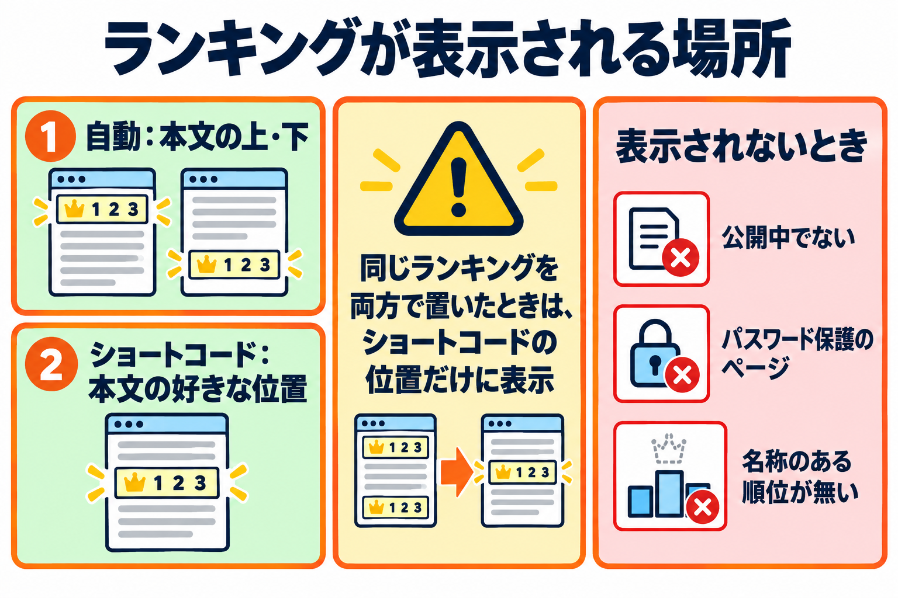
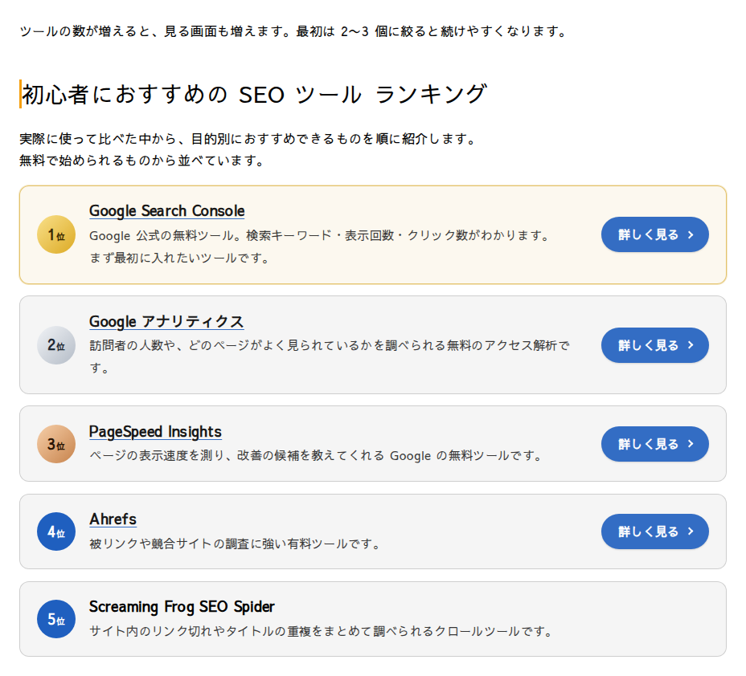
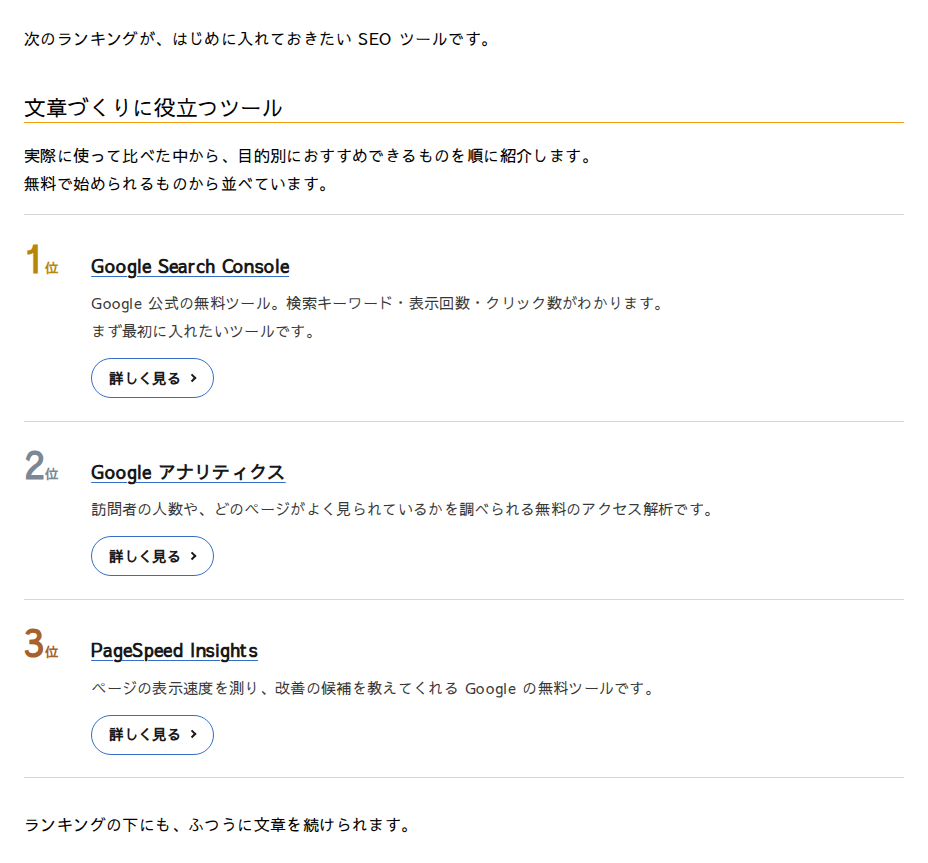

公開ページでの表示
ランキングがサイトのどこに、どのような条件で表示されるかを説明します。

このページでは、サイトを見る人の画面（公開ページ）に、ランキングがどこに、どんな条件で表示されるかを説明します。
表示のしかた（3 通り）
| しかた | 動き |
|---|---|
| 自動（本文の上・本文の下） | ページの編集画面のボックスで、ランキングと表示位置「本文の上」「本文の下」を選ぶと、本文の最初・最後に自動で表示します。 |
| ショートコード（id なし） | 表示位置を「手動」にして選んだランキングを、本文に書いたショートコード [kashiwazaki_seo_recommended_ranking] の位置に表示します。 |
| ショートコード（id あり） | [kashiwazaki_seo_recommended_ranking id="123"] のように、ランキングの番号を書くと、そのランキングを、書いた位置に表示します。ボックスでの選択に関係なく、どのページでも使えます。 |
ボックスの使い方は投稿の編集画面のボックス、ショートコードのコピーはプレビューとショートコードを見てください。
本文の下（自動）

本文の好きな位置（ショートコード）

表示される条件
次の条件がそろったときに、ランキングが表示されます。
| 条件 | 説明 |
|---|---|
| ランキングが公開中 | 下書き・予約・レビュー待ち・非公開・ゴミ箱のランキングは、表示されません。 |
| ランキングにパスワードを付けていない | 公開中でも、ランキング自体にパスワードを付けていると、表示されません。 |
| 名称のある順位がある | 名称が入力された順位だけが表示されます。1 つも無いときは、何も表示されません。 |
| ページを見られる状態 | ランキングを置いたページを、見る人が開けること（公開されていること。パスワードで守られているときは、パスワードを入力したあと）。 |
自動の表示には、さらに次の条件があります。
- そのページの投稿タイプに、設定画面の「ランキングを選べる投稿タイプ」でチェックが入っていること。
- そのページで、ランキングを選び、表示位置を「本文の上」または「本文の下」にしていること。
- パスワードで守られたページでは、パスワードを入力する前は表示されません。
- 複数のページに分けた投稿では、「本文の上」は最初のページだけ、「本文の下」は最後のページだけに表示されます。
表示されない場面
- 投稿の一覧ページ・検索結果・抜粋・フィードには、ランキングは自動では表示されません。
- ショートコードの id に、数字でない値や 0 を書いたときは、何も表示されません（ページで選んだランキングに置き換わることもありません）。
- 表示位置が「表示しない」のページでは、id のないショートコードは何も表示しません。
- ショートコードの書き方の例を文章で見せたいときは、
[[kashiwazaki_seo_recommended_ranking]]のように、括弧を二重にして書くと、ランキングにならず、そのままの文字で表示されます。
同じランキングを 2 か所に置いたとき
- 自動の表示と、ショートコードの両方で同じランキングを置いたときは、ショートコードの位置だけに表示します（2 回は出ません）。
- ショートコードを 2 か所に書いたときは、書いた分だけ表示されます。ただし、構造化データの出力は 1 回です。
ページでの見た目
- 見た目は、ランキングごとに選んだデザインの型で、色は設定画面の「メインの色」と「1位〜3位の色」です。
- 見出しは、ランキングの枠の直前に置かれます。見出しの種類（h2・h3・h4・太字）は、ランキングごとに選べます。
- 幅は、ランキングを置いた場所の幅に合わせて切り替わります。スマホなど狭い幅では、説明とボタンが縦に並びます。
- 文字の大きさ・フォント・見出しの飾りは、お使いのテーマによって変わります。
ページの表示速度について
- 公開ページで読み込むのは、スタイルシート（CSS）1 本（約 33KB、圧縮すると約 5KB）だけです。JavaScript は読み込みません。
- スタイルシートは、ランキングを表示するページだけで読み込みます。
構造化データ
ランキングを表示したページには、表示した内容と同じ構造化データ（JSON-LD）が出力されます（出力をオフにしていないとき）。ページの表示には現れません。くわしくは構造化データのページを見てください。
| 状況 | 構造化データ |
|---|---|
| ランキングを表示したページ | 出力されます。 |
| 同じランキングを同じページに 2 回置いた | 1 回だけ出力されます。 |
| ランキングが表示されなかったページ | 出力されません。 |
| 設定画面、またはそのランキングで出力をオフにした | 出力されません。 |
ランキングを更新したとき
ランキングを更新すると、そのランキングを使っているすべてのページの表示が、新しい内容に変わります。ページのキャッシュを使うプラグインやサービスをお使いのときは、反映されるまでに、キャッシュの更新が必要な場合があります。